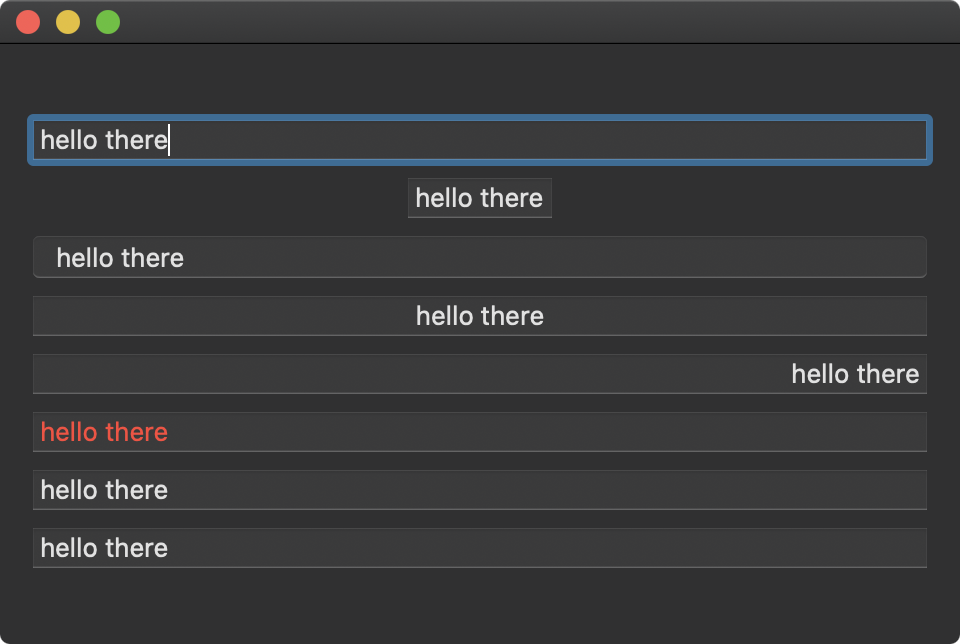

The TextField structure is a control that provides an editable text field. Various modifiers are available to customize the appearance and text alignment. Actions can be performed when editing begins and ends for the text field or when the return key is pressed.

import SwiftUI
struct ContentView: View {
@State private var text1 = ""
var body: some View {
VStack {
TextField("Example 1", text: $text1)
TextField("Example 2", text: $text1)
.fixedSize()
TextField("Example 3", text: $text1)
.textFieldStyle(RoundedBorderTextFieldStyle())
TextField("Example 4", text: $text1)
.multilineTextAlignment(.center)
TextField("Example 5", text: $text1)
.multilineTextAlignment(.trailing)
TextField("Example 6", text: $text1)
.foregroundColor(.red)
TextField("Example 7", text: $text1, onEditingChanged: { editing in
if editing {
print("is editing")
} else {
print("not editing")
}
})
TextField("Example 8", text: $text1, onCommit: {
print("on commit")
})
}
.padding()
.frame(width: 480, height: 300)
}
}
Swift Programming for macOS © 2025
Built with Genja by Gavin Wiggins